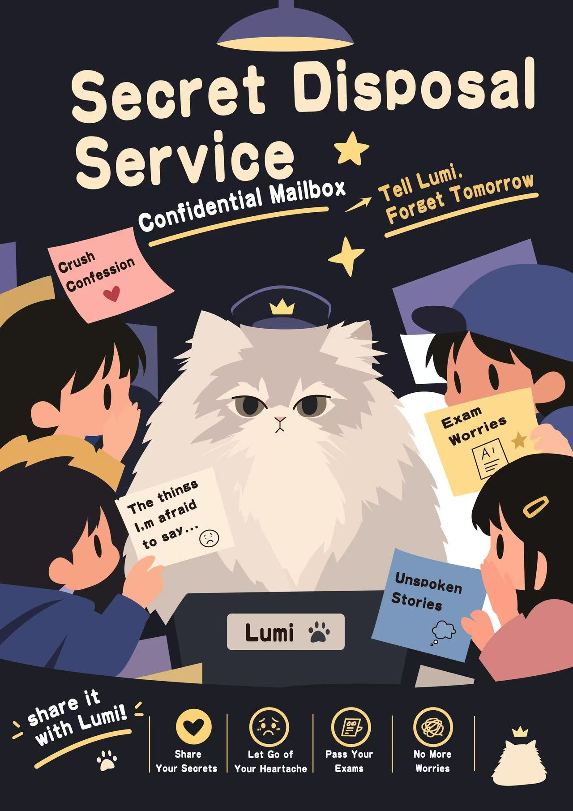
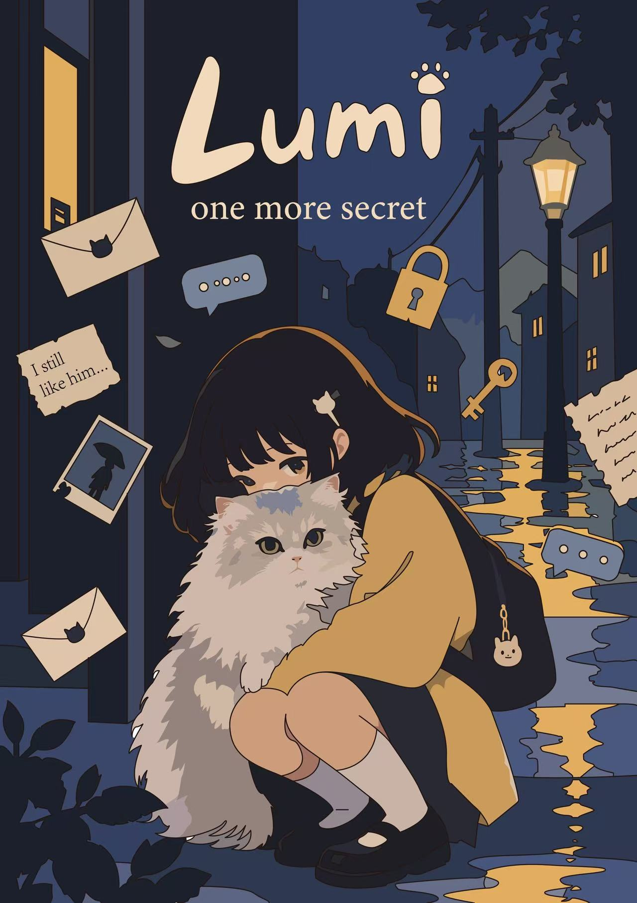
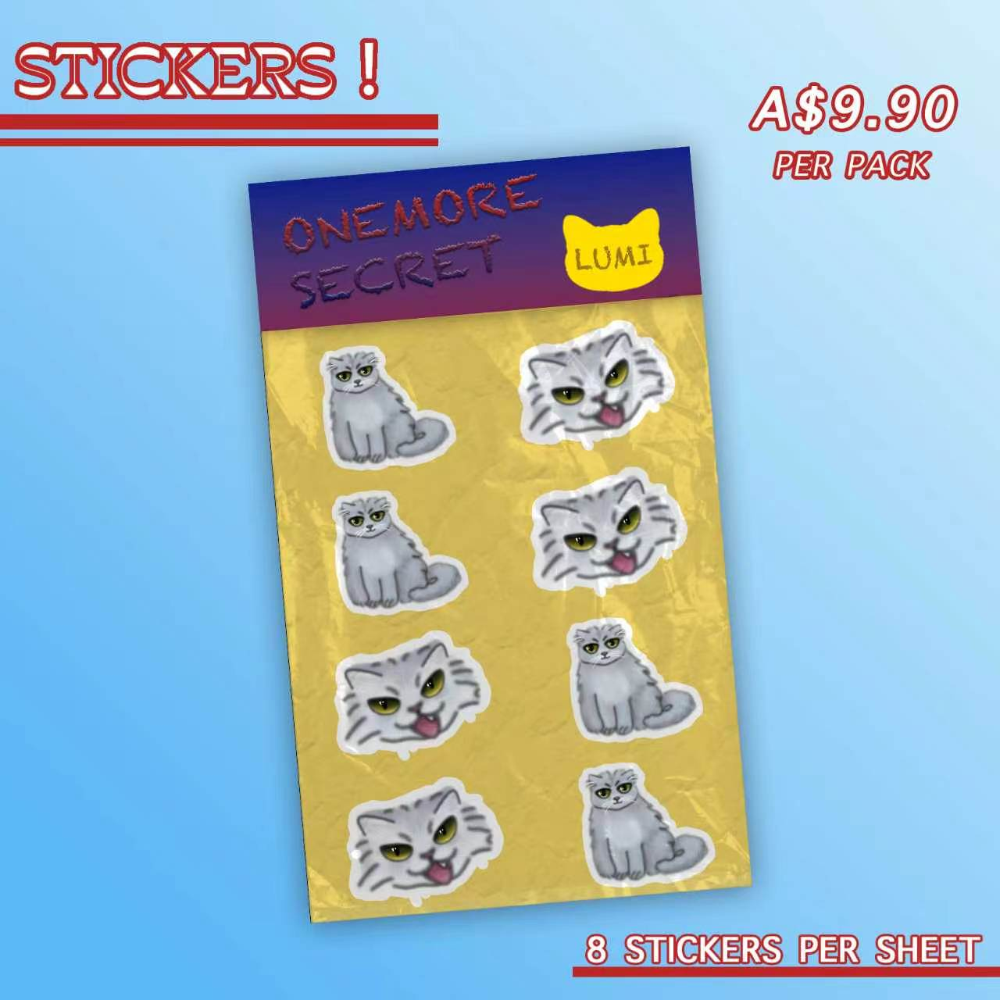

Follow the gaps
The timeline gives you Rachel's version of events, while separate files reveal pieces from different points in the storyworld.
Enter timelineA digital investigation into a cat who may know things that people have forgotten. The archive is incomplete. The audience is invited to investigate the gaps.
Follow clues in any order. Open evidence. Build a theory. Leave a secret for Lumi. Add a record to the community archive. Your actions are part of the investigation experience.
The timeline gives you Rachel's version of events, while separate files reveal pieces from different points in the storyworld.
Enter timelineCompare the old legend, neighbourhood record, secrets and memory gaps. The archive does not tell you what to believe.
Open evidenceSubmit a secret, record your theory and contribute an observation. The audience can become part of the storyworld.
ParticipateThese visual artefacts expand Lumi’s story beyond Rachel’s archive: a secret-disposal poster, a quiet moment between Lumi and a girl, and a small piece of Lumi merchandise from the storyworld.



Select an image to view it at full size.
Rachel has found evidence that existed before she met Lumi. She has found an old legend about a cat that takes secrets away. She has found a connection between secrets and missing memories.